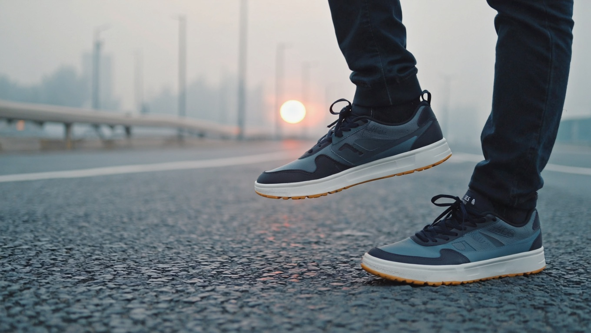
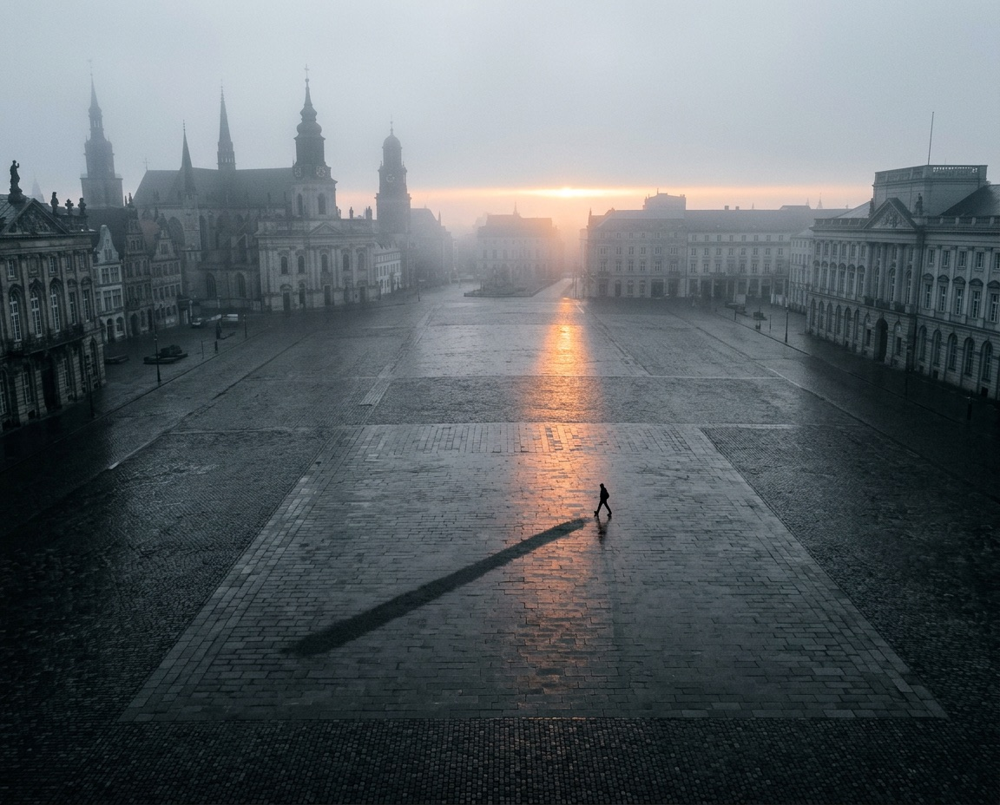
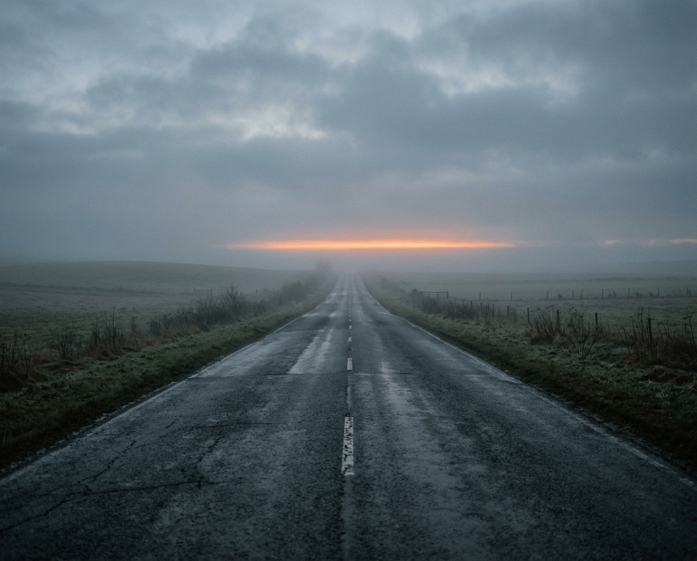

01
Технология вместо пожеланий
У каждой сессии прописаны темп, дыхание, взгляд, среда и голос. Это инструкция, по которой можно идти буквально с первого утра.

Каждое утро сессия движения по точной технологии, и сразу после неё денежное действие, пока держится эффект. Одно действие, два результата: денежное состояние и здоровье.
Час ходьбы сам по себе одна из самых полезных вещей, которые человек может сделать для тела и мозга: это измерено лучше всего в медицине. Вопрос в том, куда уходит энергия и время этого часа.
Час движения: мозг в другом режиме, кортизол ниже, мышление шире. Энергия уже есть.
Настройка на каждую сессию: намерение, видение, куда направить внимание. Её задаёт Дарья.
Состояние, здоровье и цели, к которым доходят. Дорога к ним проверена на практике.
Каждый элемент по отдельности известен давно. Результат даёт их соединение, и в этом весь протокол.
Про неё говорят третий год: намерение, благодарность, прогулка. У многих правда становится легче, а потом эффект тает, и человек решает, что дело в нём.
Дело в физиологии: кортизол, режим мышления, свет и ритм шага. Этот механизм измерен в исследованиях, ниже он разобран с именами и цифрами.
У каждой сессии прописаны темп, дыхание, взгляд, среда и голос. Это инструкция, по которой можно идти буквально с первого утра.
Потолок у каждого держит своё. Тест первого дня определяет вход, дальше настройки меняются под то, что чинится сегодня.
За каждой настройкой стоит исследование: Стэнфорд, PNAS, JAMA Psychiatry. Всё проверяемо, источники открыты.
Сессия заканчивается действием в реальные деньги, в открытое окно эффекта. За три недели таких шагов не меньше десяти.
27 часов движения и замеры до и после: пульс, сон, талия, сахар. Обычно за этими эффектами идут к гаджетам и добавкам.
План плохой погоды, адаптированная версия, пропуск не обнуляет. Конструкция держит, даже когда неделя рушится.
Шаг переключает мозг в другой режим, и этот режим засекали приборами.
В стэнфордских экспериментах шаг поднял дивергентное мышление у 81% участников: люди на ходу порождали заметно больше свежих идей, чем сидя. Именно этого не хватает при денежном потолке: человек застрял не потому, что глуп, а потому, что не видит ходов.
Oppezzo, Schwartz · Стэнфорд · 2014Медитативная ходьба снижала кортизол и балл депрессии там, где обычная того же объёма не справлялась. Разница не в шагах, а в компоненте внимания. Поэтому в протоколе прописано, куда смотреть и что делать с дыханием.
Prakhinkit et al. · 2014 · рандомизированноеПолтора часа среди зелени снижали руминацию и активность зоны мозга, связанной с риском депрессии. Жвачка «почему у меня не выходит» затихает, и место занимает мысль подлиннее.
Bratman et al. · PNAS · 2015Год ходьбы развернул возрастную убыль гиппокампа
Erickson · PNASПрогулка после еды срезает пик сахара лучше длинной днём
DiPietro · Diabetes CareШаг поднял поток свежих идей у 81% участников
Oppezzo · СтэнфордРост кортизола сдвигает выбор к избеганию риска
Kandasamy · PNASПрогулка в зелени гасит прокручивание мыслей
Bratman · PNASОбъём движения протокола связан с риском депрессии ниже на четверть
Pearce · JAMA PsychiatryПоэтому главное денежное действие дня стоит сразу за сессией, в открытое окно.
Стэнфордские замеры делали именно на ходьбе: темп остаётся разговорным, и голова продолжает думать. Бег и зал так не умеют, там внимание забирает тело.
Их принято разводить: здоровье когда будет время, деньги прямо сейчас. В физиологии это один контур, и он замкнут. Ходьба входит в него сразу в трёх точках.
При высоком кортизоле оценка риска перенастраивается физически. Человек не боится назвать цену, он просто не видит вариантов, где это возможно.
Kandasamy, Coates et al., PNAS, 2014После ночи без сна мозг сильнее откликается на выигрыш и слабее на потерю. Выбор смещается к риску, а сам человек этого не замечает.
Обзор 25 исследований принятия решений при недосыпеУ работающих людей с депрессией фиксируется около 23 лишних дней потерянной продуктивности в год. Это ровно те дни, когда не отправлено предложение и не названа цена.
Оценки потерь продуктивности, ВОЗОдно действие каждый день, и то, и другое.
Эта часть доказана лучше денежной. Ходьба одно из самых изученных вмешательств в медицине, и протокол собран так, чтобы за 21 день набрался объём, на котором эффекты вообще фиксируются.

Риск депрессии падает круче всего на первых часах движения в неделю. Объём протокола стоит в рабочей зоне кривой.
Pearce et al., JAMA Psychiatry, 2022 · 190 000 участниковПятнадцать минут шага после ужина срезают вечерний подъём глюкозы сильнее, чем одна длинная прогулка в другое время.
DiPietro et al., Diabetes Care, 2013 · схематично
Когда задача не решается месяцами, кажется, что дело в воле. На деле не хватает вариантов: сжатая система видит два выхода, оба плохие, и выбирает не трогать. После сессии поле шире, и тот же вопрос выглядит иначе.
Отдельная ловушка: чистая визуализация желаемого. В экспериментах красочные мечты о результате снижали энергию и реальные шаги к нему. Намерение в протоколе построено по другой схеме, проверенной на десятках исследований, и это одна из вещей, которую вы забираете с собой навсегда.
Oettingen, Mayer · 2002 · Kappes, Oettingen · 2011Мышление шире, кортизол ниже, сопротивление слабее обычного.
Письмо, цифра в прайсе, просьба. Одно движение в реальные деньги, сразу.
Что сделано и что изменилось. За три недели из строк собирается сдвиг.

Час утром. Пятнадцать минут вечером. Двадцать один день.
Денежный потолок держат шесть механизмов, и под каждый собран свой режим движения. Настраиваются темп, дыхание, взгляд, среда, голос и окно действия после сессии. Стартовый режим определяется на первой прогулке, потому что универсальный план части людей просто вредит.
Когда о деньгах думать физически тяжело и хочется отложить всё на завтра.
Когда всё серое и ни одна цель больше не тянет вперёд.
Когда доход упирается в одну и ту же цифру и всякий раз откатывается назад.
Когда цифра застревает в горле, а после названной суммы хочется сразу оправдаться.
Когда отдавать легко, а принимать деньги, помощь и похвалу неловко.
Когда деньги приходят и тут же расходятся, а плана дальше месяца нет.
Заходим в денежную тему с холодной головой
На старте вы делаете короткий тест прямо на ходу и по реакции тела определяете свой вход: с какого режима начинать и чего в первые дни не делать вовсе.
Универсальный план части людей вредит. Например, тем, кто в изоляции, одиночные прогулки в тишине её только усиливают. А тем, кто в сильной тревоге, нельзя стартовать с намерений про доход. Поэтому входов несколько, и ваш определяется по вам.
Реакция тела в первые две секунды: сжатие, азарт, пустота или торг. Она и есть ваша карта входа. Какая цифра, как её произносить и что означает каждая реакция: в первый день, внутри протокола.

Если вы уже пробовали и бросили, причина, скорее всего, ниже. И живёт она в конструкции самих марафонов.
Цифра пришла из книги пластического хирурга 1960 года: столько пациенты привыкали к новому лицу в зеркале. Современные измерения дают от 18 до 254 дней, в среднем около 66.
Норма родилась в японской рекламе шагомера 1965 года, наука её не задавала. Метаанализы видят пользу раньше, а решает не только объём, но и интенсивность с таймингом.
Красочные мечты о результате в экспериментах снижали энергию и реальные шаги: мозг частично засчитывает желаемое как полученное, и напряжение цели падает.
Схема сессии: сначала снимается напряжение, к середине мышление выходит на пик, а после остановки эффект держится, и в это окно ставится денежное действие.
Какой сегодня режим, зачем он и что будет на пике. Читается за пару минут до выхода.
Голос задаёт темп, дыхание и фокус. Потом наушники снимаются, и остаток пути идёт в тишине: это принципиально.
Одно конкретное движение в реальные деньги: отправить, назвать, отложить, спросить. Пока эффект сессии ещё держится.
Метаболический блок, который не меняется все три недели. Сахар ровнее, сон глубже, утро легче.
Четыре поля: состояние до и после, что заметили, что сделали. По этим строкам вы увидите собственный сдвиг.
Порядок выстроен по физиологии: сначала выключается режим угрозы, потом возвращается желание, и только затем голос и масштаб. Ставить его раньше, чем снята тревога, бессмысленно, тело не даст.
Диагностика входа, выход из сжатия, первые лёгкие победы. Никаких сумм и целей: сознательно.
Возвращение драйва, работа с внутренним потолком, первое действие из новой точки.
Самая денежная неделя: цена вслух, прямые просьбы, способность принимать. Задания идут в реальные деньги.
Горизонт и стратегия, сборка личного плана на следующие 45 дней, передача протокола вам насовсем.
Пропущенный день не обнуляет путь. Это не поблажка, а данные: привычку строит повторение, идеальная серия ей не нужна. Догоняющий формат заложен в конструкцию.
Каждое утро Дарья задаёт направление: режим, смысл и задание дня. Коротко, перед выходом.
Голос ведёт первую часть сессии: темп, дыхание, вход в состояние. Слушается на ходу.
Вся система целиком: исследование, механизмы, режимы, план до 66 дня. Остаётся у вас.
Отдельная платформа, как у «Протокола денег»: карта 21 дня, цели и километры, графики прогресса, дневник. С телефона и компьютера.
Пять цифр по деньгам и пять по телу: старт, контрольная точка на 11 день и финал.
Личный протокол на следующие 45 дней собирается в последнюю неделю: путь не обрывается.
Пять минут перед стартом, и у сдвига появляется точка отсчёта. Сравнение на одиннадцатый и двадцать первый день.
Есть глюкометр или сенсор? Добавьте замер сахара через час после ужина: разницу от вечерних прогулок видно с первых дней.
Протокол стартует 5 августа, а физиология работает уже сейчас. Вот что можно проверить на себе до старта.
Короткая прогулка сразу после еды срезает вечерний подъём сахара. Если есть сенсор или глюкометр, разницу видно с первого раза.
Выйдите без контента и заметьте, куда идут мысли. Это черновой замер собственной руминации, без приложений.
Вернувшись, сразу сядьте за задачу, которую откладывали. Сравните, как она выглядит после часа движения.
Это образовательная программа о физиологии и психологии денежного состояния. Она не заменяет медицинскую помощь и не даёт финансовых советов. При заболеваниях сердца, диабете, проблемах с суставами, беременности или долгом перерыве в движении согласуйте нагрузку с врачом: внутри есть адаптированная версия.

Голос всех настроек и аудио. Шесть лет ведёт программы о мозге, теле и деньгах: «Протокол денег», практики тишины. Каждое утро задаёт направление дня: мягко и по делу.
Собрал протокол и прошёл его сам: ставил конкретные денежные цели и доходил до них, соединяя движение с направлением. Каждый элемент программы проверен этой практикой.
В протоколе есть план плохого дня: короткий формат в помещении, по лестнице и коридору. День засчитывается, серия не рвётся. А холод сам по себе не противопоказание, одежда решает почти всё.
Да. Зелёный маршрут желателен, но не обязателен: режимы работают на любой улице, а для дней, где среда важна, подойдёт сквер, набережная или тихий квартал.
Сессия 60 минут плюс 15 вечером, и это объём, на котором в исследованиях видны эффекты. Первая неделя мягче, вход постепенный. Совсем без времени лучше не заходить: протокол работает повторением.
Нет. Пропуск не обнуляет: это подтверждено данными о формировании привычек. В конструкции есть догоняющий формат, вы продолжаете с того места, где остановились.
Первую часть сессии ведёт аудио протокола, затем наушники снимаются, и остаток идёт в тишине. Часть эффекта живёт именно в тишине. Музыка остаётся для прогулок вне протокола.
Для этого и есть диагностика первого дня и адаптированная версия: короче и мягче, с тем же смыслом. Начать можно с десяти минут, объём догоняется по неделям.
Да. Денежные действия подбираются под вашу ситуацию: разговор о пересмотре зарплаты, отклик на позицию уровнем выше, первые отложенные десять процентов, продажа ненужного. Протокол работает с состоянием и действиями, а они есть у всех, независимо от формы дохода.
На отдельной платформе с личным кабинетом, как «Протокол денег»: вход по вашей почте, внутри карта дней, аудио, задания, дневник, цели и километры с графиками прогресса. Работает с телефона и компьютера, ставить ничего не нужно.
Тремя вещами: режим каждый день свой, под механизм дня; каждая сессия заканчивается действием в реальные деньги; и у всего есть проверяемое объяснение, от дыхания до времени вечерней прогулки.
Кнопка ниже. Оплата картой, доступ закрепляется за вашей почтой.
Личный кабинет откроется до старта: осмотритесь, пройдите замеры первого дня.
Утром Дарья задаёт направление, и вы выходите на первую сессию. Дальше 21 день по карте.
21 день, 75 минут в день. Технология, дневник, замеры и действия в реальные деньги. Всё, что нужно, у вас уже есть: ноги, улица и 21 утро подряд.
Поток один, без догоняющих продаж: 5 августа вся группа выходит в одно утро.
Не обещаем сумм к датам и излечения. Даём механизм, объём, на котором в исследованиях виден эффект, и три недели точной работы.
Макет страницы. Тексты черновые, цифры и источники настоящие. Финальный текст проходит словесника, редактора и детектор, цена и кнопка оплаты подключаются после решения по условиям.